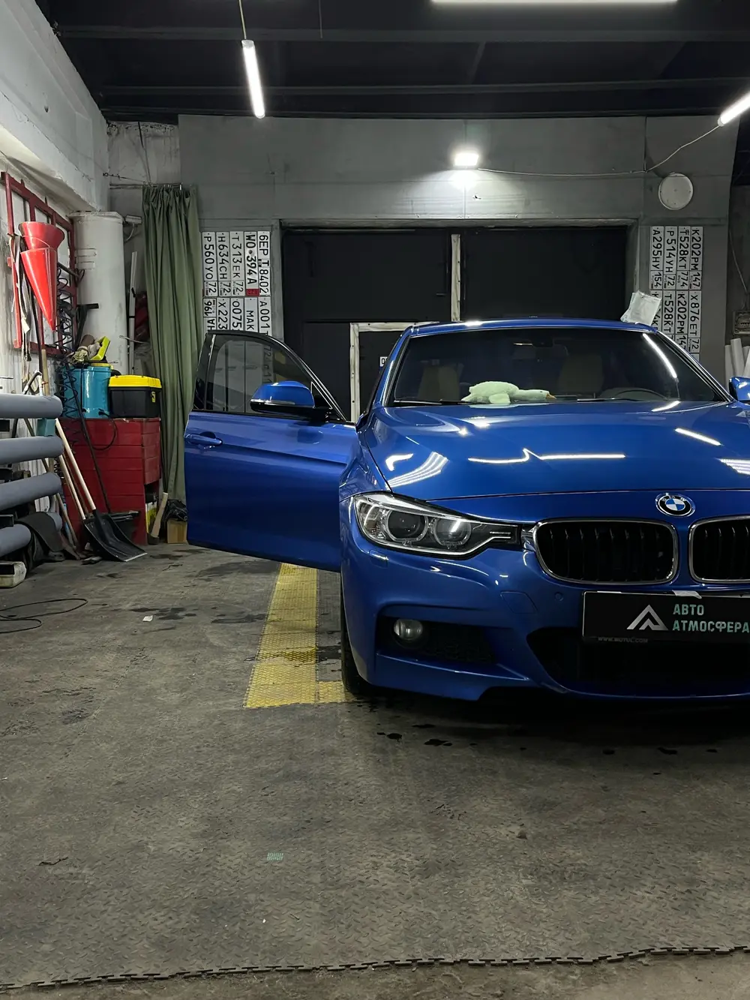
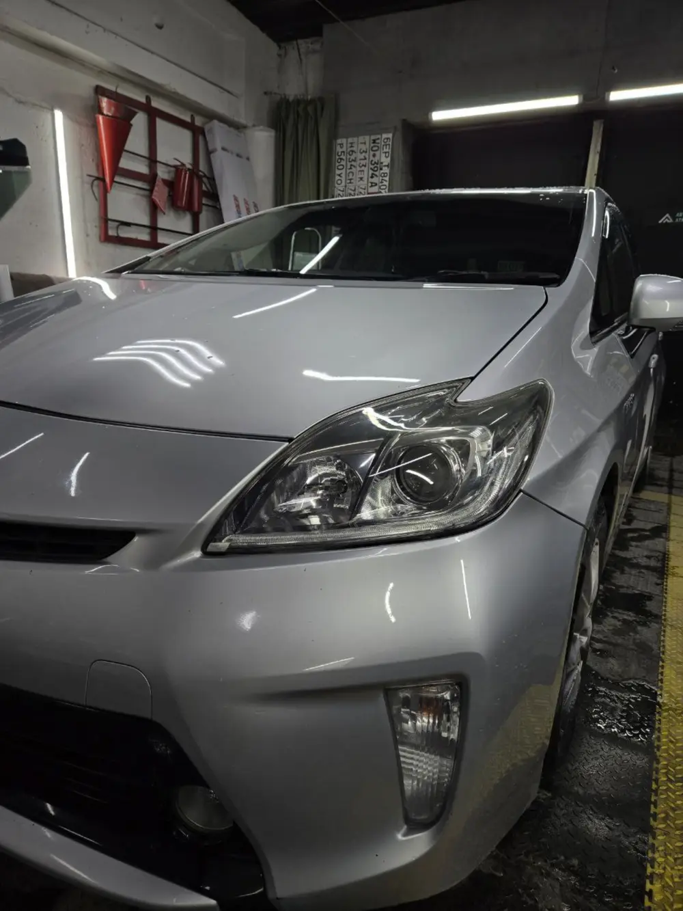
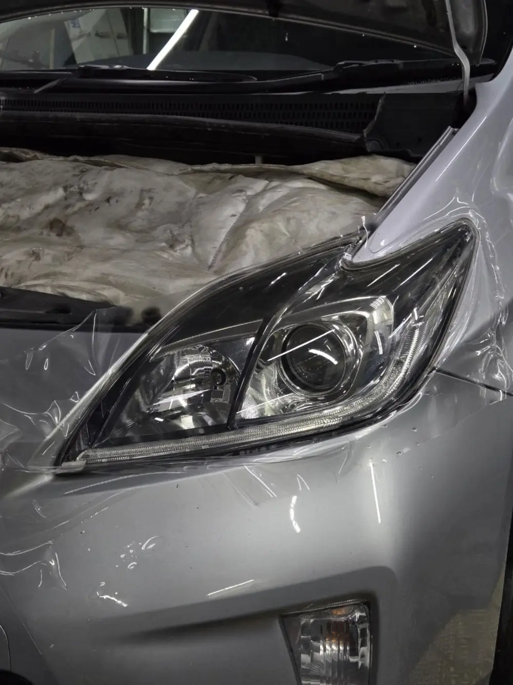

Тонировка задней части
Задняя полусфера, в том числе со снятием заднего стекла.
Источник: отзыв Сергея Сединкина, 2ГИС, 13.02.2026
от 3 500 ₽по прайсу 2ГИС на 12.11.2025, цена «от», уточняйте

Авто АтмосфераСтудия в Тюмени · бокс 3 · Пржевальского, 36Б/1
Мастер Максим. Подберём затемнение, покажем, что разрешено по закону, и запишем на удобное время. Все услуги можно выбрать сразу, сообщение соберётся само.


Цены взяты из прайса 2ГИС (обновлён 12.11.2025) и помечены «от». Где цены нет, так и написано. Отметьте нужное - выбор попадёт в запись.
Задняя полусфера, в том числе со снятием заднего стекла.
Источник: отзыв Сергея Сединкина, 2ГИС, 13.02.2026
Передняя полусфера плёнкой.
Источник: отзыв Дмитрия А, 2ГИС, 05.04.2025
Клиенты упоминают полосу на лобовом стекле.
Источник: отзывы 2ГИС, 20.05.2026 и 27.02.2026
Снимают старую плёнку, в том числе перед постановкой на учёт.
Источник: отзыв Павла Грицаева, 2ГИС, 20.07.2026
Упомянута в одном отзыве. Наличие услуги подтвердит студия.
Источник: отзыв 2ГИС, 13.02.2026
Плёнка на фарах. Клиенты пишут про защиту от царапин и быструю работу.
Источник: отзыв Nikita Shvetsov, 2ГИС, 01.02.2026
Плёнка и тонировка задних фонарей.
Источник: отзывы 2ГИС, 01.02.2026 и 13.02.2023
Защита зон риска кузова плёнкой. Какие зоны входят - уточняется.
Источник: прайс 2ГИС
Оклейка крыши чёрной глянцевой плёнкой.
Источник: прайс 2ГИС, отзыв 2ГИС 20.05.2026
Камуфляжная плёнка на кузове, карбон-винил на накладках.
Источник: фото из карточки 2ГИС, отзыв 07.01.2026
Прайс 2ГИС не является офертой. Актуальность цен подтвердит студия. Открыть прайс в 2ГИС
Двигайте ползунок: стёкла на схеме темнеют, а справа - что говорит закон. Нажмите на зону, чтобы выбрать стекло и добавить услугу в запись.
Проверено 06.11.2026. Штраф 500 ₽ по ч. 3.1 ст. 12.5 КоАП РФ (в редакции с 09.01.2026). Норма 70% для ветрового и передних боковых стёкол - п. 4.3 Перечня неисправностей. Для задних стёкол в п. 4.3 норма не найдена. Справка, не юридический совет: точное значение зависит от стекла и плёнки, уточняйте у мастера.
Две фотографии одной Toyota Prius из карточки 2ГИС: плёнка на фаре в процессе оклейки и готовый результат. Честных пар «до/после» тонировки в материалах пока нет, их нужно получить у владельца.

Источник фото: фотографии карточки 2ГИС . Фото кадрированы под горизонтальный формат, без растягивания. Права подтвердит владелец.
Реальные фотографии из карточек студии на Яндекс Картах и в 2ГИС. Номера автомобилей закрыты.
Фото принадлежат студии и авторам снимков (часть - из отзывов клиентов). На боевом сайте используем только с согласия владельца.
Дословно, с автором, датой и ссылкой на площадку. Прочитаны все 11 отзывов Яндекса и 50 из 143 отзывов 2ГИС.
«Уже долгое время приезжаю только к данному мастеру и всегда не ошибаюсь с выбором, так как уверен в ответственном подходе и качественных материалах»
«Спасибо Максу за качественный подход к автомобилю. Сделал все качественно и быстро , следующий раз поеду обязательно только к нему»
«Тонировала свой TANK 300. Супер. Без записи без очереди. Показалось очень быстро. И по стоимости не дорого. Буду рекомендовать своим знакомым. Спасибо.»
«Максим хороший человек)) затонировал заднюю полусферу со снятием заднего стекла и лобовое в атермальную пленку. Всё чисто, красиво как в аптеке, музыка на фоне просто божественная, ценник приятный, доволен как слон»
«Обратился к Максиму с целью защитить фары и немного освежить их внешний вид. Работы заняли примерно час — мастер был аккуратным и внимательным. Фары стали выглядеть лучше, и защита от царапин работает отлично. Цена доступная, результат отличный — пожалуй лучший выбор. Всем, кто ищет быструю и качественную работу — советую!»
«Единственное место где берут в работу авто ваз, так ещё и по адекватной цене, отдельный респект мастеру, быстро и чётко, знает свою работу!»
Имена авторов показаны как на площадках. Согласие на публикацию с именами подтвердит владелец.
Отметьте одну услугу, несколько или все сразу, выберите день и время. Сообщение собирается автоматически, его можно отправить в WhatsApp или ВКонтакте.
Тюмень, район КПД, Ленинский округ. Метка по координатам карточки Яндекс Карт, точное место входа подтвердит студия.
Тюмень, ул. Пржевальского, 36Б/1, бокс 3. Если карта не загрузилась, откройте её в Яндексе или 2ГИС.
Как добратьсяЭто демонстрационная версия. Всё, что не подтверждено источниками, помечено на сайте словом «уточнить».